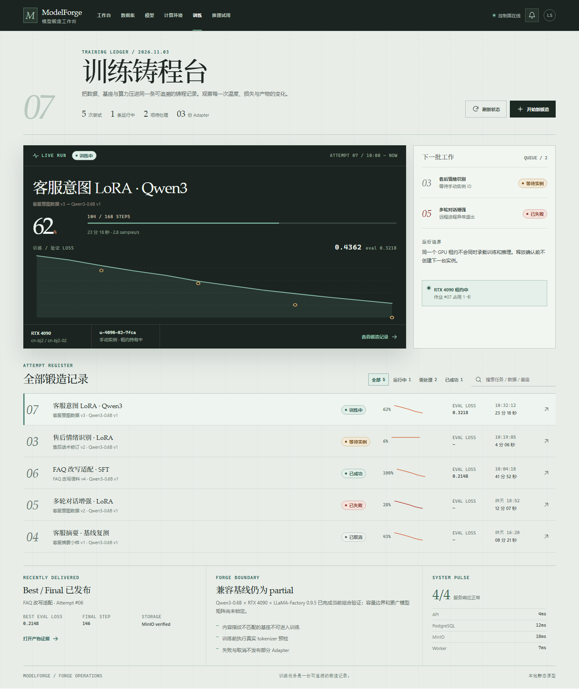

A
OPERATIONS
运行控制墙
异常在哪一步发生，就在哪一步处理。强调门禁、日志、实例成本与当前行动。

适合高频值守与故障处置打开 A 原型 →
不是三套换色皮肤。A 把异常与门禁放进同一视线；B 把训练组织成可观察、可验收的生命周期；C 把曲线与运行索引变成一张证据画布。三者共享同一组业务事实与状态边界。
异常在哪一步发生，就在哪一步处理。强调门禁、日志、实例成本与当前行动。
一条训练就是一份可追溯记录：阶段、曲线、日志与 Best / Final 出品门共享同一叙事。

左定位运行、中读信号、右核对冻结输入。优先呈现真实曲线、异常空值与可比较结构。

视觉可以不同，以下事实不能合并或补造。